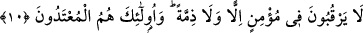
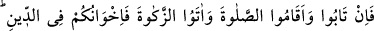
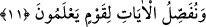

heva ve arzulara ram oldular. Böylece de insanları “O’nun yolundan” O’na ulaştıran
dîninden veya Beyt-i Harâm’ının yolundan hacıları ve umre yapmak isteyenleri
döndürmek ve kuşatmak sûretiyle “alıkoydular.” kendileri döndüler ve yüz çevirdiler
ya da başkalarını men edip döndürdüler.
“Gerçekten yapmakta oldukları şeyler ne kötüdür.” Onların devamlı olarak
yaptıkları bu davranış ne kötü bir davranıştır.
Denilir ki Ebû Süfyan b. Harb bedevileri toplayıp yemek yedirdi ve bunu onların
Rasûlullah (s.a.) uymalarına mâni olmak ve Rasûlullah (s.a.) ile aralarındaki ahdi
bozmalarını teşvik için yaptı. Onlar da bu yemek hatırına ahidlerini bozdular. Buna
göre, ayetteki “Satanlar” bu bedevilerdir. “az bir para” da Ebû Süfyan’ın yedirdiği bu
yemektir.
Fakir (İsmail Hakkı Bursevî) der ki: Bu âdet günümüze kadar devam edegelmiştir.
Bugün de hevasına uyan, zulmü meslek edinmiş bazı kimseler, toplumun ileri gelenleri
sayılan bir kısım tamahkar ve yağcı kimselere sultan ve hâkimin huzurunda kendilerinin
doğru ve âdil olduğuna şahidlik yapmaları için ziyafetler verirler. İşte onlar da Allah’ın
âyetlerini az bir paraya, yâni bu basit ziyâfet karşılığında satarlar.
10. Bir mümin hakkında ne ahit tanırlar ne de antlaşma. Çünkü onlar
saldırganların kendileridir.
“Bir mümin hakkında ne ahit” yemin veya akrabalık hakkı “tanırlar ne de
andlaşma.” Yâni onlara riâyet ve onları muhâfaza etmezler.
Bu âyet, onların müminlerle yaptığı andlaşma gereklerine mutlak olarak uymadıklarını
beyan ediyor. Onun için yukardaki ayetin bir tekrarı söz konusu değildir.
“Çünkü onlar” sayılan bu kötü sıfatları taşıyanlar, “saldırganların kendileridir.”
zulüm ve haksızlıkta en son sınırları aşan kimselerin ta kendileridir.
11. Fakat tevbe eder, namazı dosdoğru kılar ve zekât verirlerse, artık onlar dinde
kardeşlerinizdir. Biz bilen bir kavme âyetlerimizi böyle açıklıyoruz.
“Fakat” kâfirlikten ve diğer büyük günahlardan “tevbe eder, namazı dosdoğru kılar
ve zekat verirlerse,” onları yapmaya devam eder ve farz olduklarına inanırlarsa “artık
onlar dinde kardeşlerinizdir.” Sizinle aynı haklara sahip olurlar. Lehinize ve aleyhinize